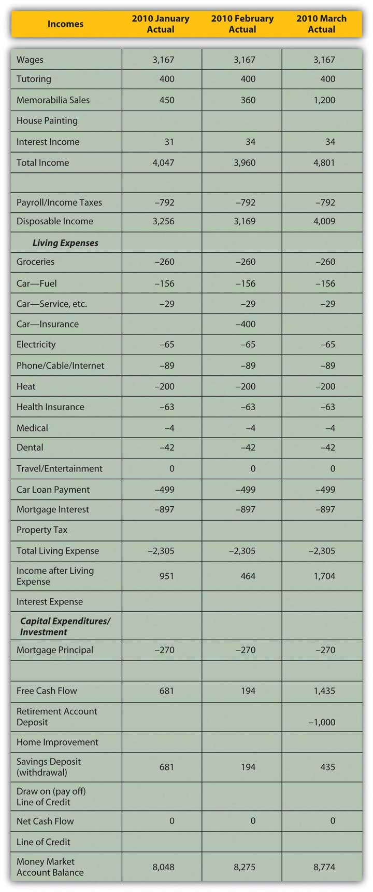

A budget varianceA difference between the actual results of your financial activity and your expected, budgeted results. occurs when the actual results of your financial activity differ from your budgeted projections. Since your expectations were based on knowledge from your financial history, micro- and macroeconomic factors, and new information, if there is a variance, it is because your estimate was inaccurate or because one or more of those factors changed unexpectedly. If your estimate was inaccurate—perhaps you had overlooked or ignored a factor—knowing that can help you improve. If one or more of those factors has changed unexpectedly, then identifying the cause of the variance creates new information with which to better assess your situation. At the very least, variances will alert you to the need for adjustments to your budget and to the appropriate choices.
Once you have created a budget, your financial life continues. As actual data replace projections, you must monitor the budget compared to your actual activities so that you will notice any serious variances or deviations from the expected outcomes detailed in the budget. Your analysis and understanding of variances constitute new information for adjusting your current behavior, preparing the next budget, or perhaps realistically reassessing your behavior or original goals.
The sooner you notice a budget variance, the sooner you can analyze it and, if necessary, adjust for it. The sooner you correct the variance, the less it costs. For example, perhaps you have had a little trouble living within your means, so you have created a budget to help you do so. You have worked out a plan so that total expenses are just as much as total income. In your original budget you expected to have a certain expense for putting gas in your car, which you figured by knowing the mileage that you drive and the current price of gas. You are following your budget and going along just fine. Suddenly, the price of gas goes way up. So does your monthly expense. That means you’ll have to
In the short term, monitoring your gas expense alerts you to a need to change your financial behavior by driving less, spending less on other things, or earning more. In the long run, if you find this increased expense intolerable, you will make other choices as well to avoid it. Perhaps you would buy a more fuel-efficient car, for example, or change your lifestyle to necessitate less driving. The number and feasibility of your choices will depend on your elasticity of demand for that particular budget item. But if you hadn’t been paying attention, if you had not been monitoring your budget against the real outcomes that were happening as they were happening, you would not have been aware that any change was needed, and you would have found yourself with a surprising budget deficit.
It bears repeating that once you have discovered a significant budget variance, you need to analyze what caused it so that you can address it properly.
Income results from the sale of labor (wages) or liquidity (interest or dividends). If income deviates from its projection, it is because
Expenses result from consuming goods or services at a price. If an expense deviates from its projected outcome, it is because
Isolating the cause of a variance is useful because different causes will dictate different remedies or opportunities. For example, if your gas expense has increased, is it because you are driving more miles or because the price of gas has gone up? You can’t control the price of gas, but you can control the miles you drive. Isolating the cause allows you to identify realistic choices. In this case, if the variance is too costly, you will need to address it by somehow driving fewer miles.
If your income falls, is it because your hourly wage has fallen or because you are working fewer hours? If your wage has fallen, you need to try to increase it either by negotiating with your employer or by seeking a new job at a higher wage. Your success will depend on demand in the labor market and on your usefulness as a supplier of labor.
If you are working fewer hours, it may be because your employer is offering you less work or because you choose to work less. If the problem is with your employer, you may need to renegotiate your position or find a new one. However, if your employer is buying less labor because of decreased demand in the labor market, that may be due to an industry or economic cycle, which may affect your success in making that change.
If it is your choice of hours that has caused the variance, perhaps that is due to personal factors—you are aging or your dependents require more care and attention—that need to be resolved to allow you to work more. Or perhaps you could simply choose to work more.
Identifying why you are going astray from your budget is critical in identifying remedies and choices. Putting those causes in the context of the micro- and macroeconomic factors that affect your situation will make your feasible choices clearer. Figure 5.15 "The Causes of a Budget Variance" shows how these factors can combine to cause a variance.
Figure 5.15 The Causes of a Budget Variance

After three months, Mark decides to look at his budget variances to make sure he’s on track. His actual results for January–March 2010 are detailed in Figure 5.16 "Mark’s Actual Income and Expenditures, January–March 2010".
Figure 5.16 Mark’s Actual Income and Expenditures, January–March 2010
How will Mark analyze the budget variances he finds? In Mark’s case, the income variances are positive. He has picked up a couple of tutoring clients who have committed to lessons through the end of the school year in June; this new information can be used to adjust income. His memorabilia business has done well; the volume of sales has not increased, but the memorabilia market seems to be up and prices are better than expected. The memorabilia business is cyclical; economic expansion and increases in disposable incomes enhance that market. Given the volatility of prices in that market, however, and the fact that there has been no increase in the volume of sales (Mark is not doing more business, just more lucrative business), Mark will not make any adjustments going forward. Interest rates have risen; Mark can use that macroeconomic news to adjust his expected interest income.
His expenses are as expected. The only variance is the result of Mark’s decision to cut his travel and entertainment budget for this year (i.e., giving up his vacation) to offset the costs of the roof. He is planning that capital expenditure for October, which (as seen in Figure 5.12 "Mark’s Alternative Cash Budget") will actually make it cheaper to do. His adjusted cash budget is shown in Figure 5.17 "Mark’s Adjusted Cash Budget for 2010".
Figure 5.17 Mark’s Adjusted Cash Budget for 2010

With these adjustments, it turns out that Mark can avoid new debt and still support the capital expenditure of the new roof. The increased income that Mark can expect and his decreased expenses (if he can maintain his resolve) can finance the project and still leave him with a bit of savings in his money market account.
This situation bears continued monitoring, however. Some improvements are attributable to Mark’s efforts (cutting back on entertainment expenses, giving up his vacation, cultivating new tutoring clients). But Mark has also benefited from macroeconomic factors that have changed to his advantage (rising interest rates, rising memorabilia prices), and those factors could change again to his disadvantage. He has tried to be conservative about making adjustments going forward, but he should continue to keep a close eye on the situation, especially as he gets closer to making the relatively large capital expenditure in October.
Sometimes a variance cannot be “corrected” or is due to a micro- or macroeconomic factor beyond your control. In that case, you must adjust your expectations to reality. You may need to adjust expected outcomes or even your ultimate goals.
Variances are also measures of the accuracy of your projections; what you learn from them can improve your estimates and your budgeting ability. The unexpected can always occur, but the better you can anticipate what to expect, the more accurate—and useful—your budget process can be.
Recognizing and analyzing variances between actual results and budget expectations
The more frequently the budget is monitored, generally
Budget variances for incomes and expenses should be analyzed to see if they are caused by a difference in
You are working fewer hours, which is reducing your income from employment and causing a budget variance. If the choice is yours, what are some microeconomic factors that could be causing this outcome? If the choice is your employer’s, what are some macroeconomic factors that could be sources of the variance? What are your choices for increasing income? Alternatively, what might you change in your financial behavior, budget, or goals to your improve outcomes?